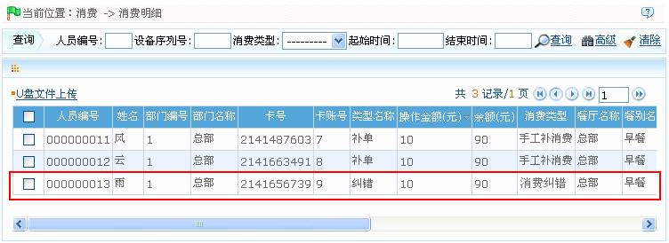
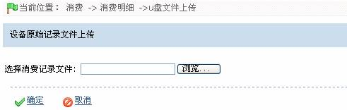

IC--8.11 消费明细
点击【消费】 【消费明细】，进入下图所示的消费明细页面：
【消费明细】，进入下图所示的消费明细页面：

用户可以在此页面中查看所有的消费明细记录，也可通过查询来查看指定的消费记录，查询的操作方法请参见附录1 常用操作。
 备注：会出现纠错的两种情况：（1）、操作员按键操作失误，造成扣款错误，此时操作员可以通过消费机上的纠错按钮，返还已扣金额，并再次正确操作，成功扣款。纠错成功后将返回一条纠错记录至系统；（2）、用户刷卡消费时，遇到网络延时或网络断线的情况，如果系统“扣费成功”，但消费机显示“联机失败”，此时系统就会自动产生一条纠错记录，用户需重新刷卡进行当前的消费，把之前的消费金额重新补上。
备注：会出现纠错的两种情况：（1）、操作员按键操作失误，造成扣款错误，此时操作员可以通过消费机上的纠错按钮，返还已扣金额，并再次正确操作，成功扣款。纠错成功后将返回一条纠错记录至系统；（2）、用户刷卡消费时，遇到网络延时或网络断线的情况，如果系统“扣费成功”，但消费机显示“联机失败”，此时系统就会自动产生一条纠错记录，用户需重新刷卡进行当前的消费，把之前的消费金额重新补上。
U盘文件上传：将U盘中的消费记录上传至软件。
1、单击消费明细页面的消费明细列表上方的【U盘文件上传】按钮，进入如下图所示的U盘文件上传页面：

2、单击【浏览】按钮，在弹出的选择文件窗口中，选择需要上传的消费记录文件。
3、单击【确定】按钮，开始上传，上传成功后返回消费明细页面，此时消费明细列表中将显示刚上传的消费记录。